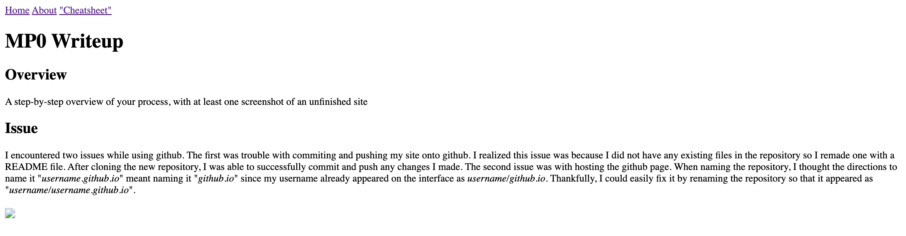
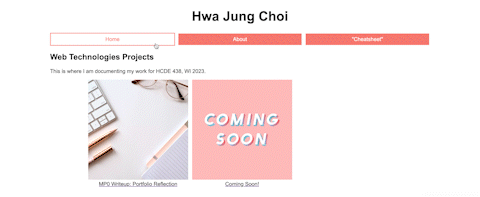

First, I created a repository in github and copied the example portfolio code provided. Luckily, the set up was not too difficult since I had experience working with git before. However, it was my first time using VS Code so it took a while to adjust to using the Source Control instead of directly committing and pushing on terminal.
Then, I changed the content of the index.html file and focused on creating both the structure and skeleton of the portfolio. In the index.html file, which acts as the homepage, I added a titlepage, header, and navigation bar. I also changed the images to more relevant, opensource photos, and added labels underneath. To finish the homepage, I added css transitions to the navigation bar and project photos, and changed the color of the background and text.
I created folders for each subpage: bio, cheatsheet, coming-soon, and mp0-writeup. Each folder contains a css and html file. I started by writing the content in the bio (about me) and coming-soon (placeholder for works in progress) html files. Then I tweaked the existing css code to include the navigation bar css transitions and fixed the spacing between the image and text.
Finally, I worked on the cheatsheet and mp0-writeup. I like to finish the writing the content in the html files first before changing the style in the css file. For example, the image below shows what the navigation bar looks like without css transitions.
I encountered two issues while using github. The first was trouble with commiting and pushing my site onto github. I realized this issue was because I did not have any existing files in the repository so I remade one with a README file. After cloning the new repository, I was able to successfully commit and push any changes I made. The second issue was with hosting the github page. When naming the repository, I thought the directions to name it "username.github.io" meant naming it "github.io" since my username already appeared on the interface as username/github.io. Thankfully, I could easily fix it by renaming the repository so that it appeared as "username/username.github.io".
The css transition I implemented was in the navigation bar, which I based on an example from mdn web docs. I chose it because I did not have a lot of content I could add CSS transitions to. Additionally, I liked the idea of making the menu pop out more. This css transition works by changing the color and background-color of menu elements when they are in their :hover and :focus states. To make the change less jarring, the transition timing was specified to a 0.5s ease-out. You can find the css code used for the transition in the "cheatsheet" subpage. Below is a gif of the css transition in action.
